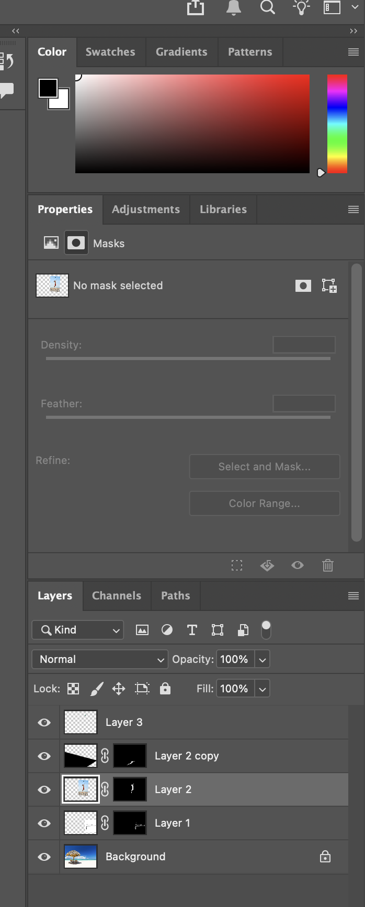

This photomontage places a volleyball player into a beach environment to create a dynamic sports scene. the beach serves as the background, while a volleyball net was added to create context and depth. The player was positioned on the left side and flipped to face the net, making the actions feel more natural and directional. Careful placement and scaling were so the elements relate to each other realistically within the space.
Back to Home